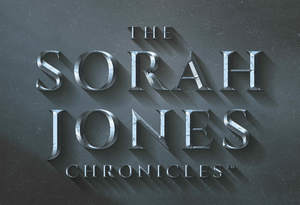

Trade Mark Journal No.2025/009 28 February 2025
UK00004161802 18 February 2025 (9,16)

- Class 9
- Audio books; Talking books; Downloadable series of children’s books; Downloadable electronic books.
- Class 16
- Non-fiction books; Fiction books; Series of non-fiction books; Comic books; Writing books; Manuscript books; Copy books; Printed books; Covers for books; Series of fiction books; Fantasy books; Story books; Colouring books; Painting books; Picture books; Gift books; Drawing books; Poster books; Information books; Scrap books; Flip books; Jackets of paper for books; Exercise books; Sticker books; School writing books; Song books; Manga comic books; Note books; Sketch books; Pop-up books; Covering materials for books; Composition books; Coloring books for adults; Graphic art books; Novels; Books; Books for children; Cookery books; Ledgers [books]; Music books; Coloring books; Educational books; Autograph books; Hymn books; Wirebound books; Cheque books; Travel books; Ledger books; Printed music books; Reference books; Baby books [storybooks]; Cook books; Guide books; Commemorative books; Index books; Religious books; Covers for cheque books; Prayer books; Check books; Hand books; Guest books; Recipe books; Resource books; Memorandum books; Coupon books; Data books; Dictation books; Account books; Agenda books; Birthday books; Activity books; Children's books; Date books; Baby books; Bill books; Rule books; Log books; Visitors books; Appointment books; Signature books; Wedding books; Score books; Telephone books; Address books; Music note books; Expense books; Binding materials for books and papers; Pocket books [stationery]; Books featuring fantasy stories; Blank journal books; Books featuring fictional stories; Holders for cheque books; Writing or drawing books.
Stephen Ambrose-Leigh